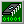

Эта статья была переведена с помощью компьютера. Если вы хотите помочь улучшить перевод, пожалуйста, напишите мне.
Мой адрес электронной почты указан на главной странице.
Больше фотографий можно посмотреть на этой этой странице.
 Sinclair ZX Spectrum - один из самых распространенных клонированных компьютеров. Уже в середине 1980-х годов люди занимались обратной разработкой ULA, пользовательской микросхемы, которая обеспечивала Spectrum большую часть его функциональности. Многие из этих ранних клонов были созданы в странах, где оригинальный Spectrum было трудно найти, обычно из-за международных торговых ограничений.
Sinclair ZX Spectrum - один из самых распространенных клонированных компьютеров. Уже в середине 1980-х годов люди занимались обратной разработкой ULA, пользовательской микросхемы, которая обеспечивала Spectrum большую часть его функциональности. Многие из этих ранних клонов были созданы в странах, где оригинальный Spectrum было трудно найти, обычно из-за международных торговых ограничений.
Самым ярким примером этого был Советский Союз и Восточный блок. Хотя в этой части мира уже существовали доступные самодельные компьютеры, в коммунистические времена редко существовал финансовый стимул для написания видеоигр, поэтому был стимул разработать компьютер, который мог бы запускать сотни (если не тысячи) игр для Spectrum, написанных на Западе.
Из-за проблем с поставками в советское время такой компьютер должен был быть разработан с использованием самых доступных деталей, но при этом быть доступным для скромной средней зарплаты в СССР.
В СССР было разработано множество Spectrum-совместимых компьютеров, но самым популярным стал «ленинградский вариант», разработанный Сергеем Зоновым в 1988 году. Этот дизайн нашел свое применение в десятках серийных компьютеров по всему СССР и оставался на рынке вплоть до 1990-х годов.
Когда ретро-компьютеры стали более массовым увлечением, цена оригинального оборудования Sinclair выросла настолько, что собрать свой собственный Spectrum стоит примерно столько же, сколько купить оригинальный.
«Ленинград-М» - это моя вторая копия компьютера «Ленинград». Я заменил все редкие микросхемы на более распространенные, исправил аппаратные ошибки, уменьшил размер печатной платы и сократил количество компонентов. В результате компьютер можно собрать из 38 микросхем, что удивительно мало для клона ZX Spectrum, в котором не используется программируемая логическая матрица.
 Хотя «Ленинград-М» не на 100% совместим с оригинальным ZX Spectrum, я обнаружил, что он работает с удивительно широким спектром программ, включая демо-версии, основанные на непонятных трюках программирования. Протестировав свой Leningrad-M с приличным количеством программ, я бы сказал, что 97-98% из них работают без каких-либо проблем.
Хотя «Ленинград-М» не на 100% совместим с оригинальным ZX Spectrum, я обнаружил, что он работает с удивительно широким спектром программ, включая демо-версии, основанные на непонятных трюках программирования. Протестировав свой Leningrad-M с приличным количеством программ, я бы сказал, что 97-98% из них работают без каких-либо проблем.
Композитный видеовыход - монохромный. Разъем DE-9 в правой верхней части печатной платы можно использовать для подключения цветных видеоадаптеров, таких как НИМФ-4, который выводит композитное видео с кодировкой PAL.
Следует отметить, что если вы живете в стране, где стандартом является NTSC, у вас могут возникнуть проблемы с синхронизацией вашего монитора с сигналом 50 Гц, который генерирует этот компьютер. Возможно, это можно исправить, используя более быстрый кристаллический осциллятор и регулируя перемычки «ширина границы» на печатной плате, но я этого не проверял.
Я постарался сделать этот компьютер настолько простым в сборке, насколько это возможно. Стоимость почти каждого компонента (за исключением контактных головок и двух разъемов) напечатана на шелкографии, так что можно собрать его целиком, не сверяясь со спецификацией материалов.
Для упрощения конструкции (и снижения затрат) верхняя и нижняя части системной платы, чувствительные к статическому электричеству, могут быть защищены без необходимости изготовления корпуса. Печатная плата клавиатуры предназначена для крепления поверх системной платы с помощью стандартных нейлоновых винтов M3. Поскольку большинство производителей печатных плат требуют, чтобы вы заказывали минимум 5 плат для каждого дизайна, вы можете использовать одну из запасных печатных плат для клавиатуры, чтобы закрыть нижнюю часть системной печатной платы.
Клавиатура и системная печатная плата крепятся друг к другу 7 нейлоновыми винтами M3. В клавиатуре есть дополнительное отверстие для винта, который проходит через клавиатуру и располагается на верхней части системной печатной платы. Они предназначены для придания устойчивости конструкции - идеально подходят для динамичных экшн-игр!
 ZX
Spectrum был разработан задолго до того, как
были стандартизированы раскладки клавиатуры.
Кроме того, каждая клавиша соответствует
нескольким основным командам, которые
напечатаны на клавишах. К сожалению, никто
не выпускает совместимые с Cherry MX клавиатуры
с напечатанными на них командами ZX Spectrum,
поэтому вам придется создавать свои собственные.
ZX
Spectrum был разработан задолго до того, как
были стандартизированы раскладки клавиатуры.
Кроме того, каждая клавиша соответствует
нескольким основным командам, которые
напечатаны на клавишах. К сожалению, никто
не выпускает совместимые с Cherry MX клавиатуры
с напечатанными на них командами ZX Spectrum,
поэтому вам придется создавать свои собственные.
Я пришел к выводу, что лучший способ сделать это - заказать колпачки для кнопок (кейкапы) со съемными прозрачными крышками (такие же часто встречаются на торговых терминалах) и распечатать этикетки, которые можно вырезать и вставить в колпачки. Такие кейкапы можно недорого заказать на eBay или AliExpress, введя поисковый запрос «прозрачные колпачки для кнопок».
В результате получаются прочные кейкапы профессионального вида (в зависимости от того, насколько хорошо вы умеете вырезать), которые не изнашиваются со временем.
Готовые изображения наклеек на клавиши можно загрузить ниже по странице. Я разработал их на основе сочетания оригинальной клавиатуры Spectrum и наклеек из советского компьютерного набора «Сделай сам» (который был создан на базе «Ленинграда-1»).
Всего на печатной плате клавиатуры 40 клавиш шириной 1х в оригинальной раскладке ZX Spectrum и один пробел шириной 6,25х. Для сборки клавиатуры вам понадобятся:
Я работаю над клавиатурой уменьшенного размера, которая использует небольшие тактильные переключатели в качестве более дешевой альтернативы, но механическая клавиатура обеспечивает гораздо более удобный ввод текста.
 Если
у вас еще нет программатора для ПЗУ, установка
Sinclair Бейсик в ПЗУ может оказаться сложной
задачей.
Если
у вас еще нет программатора для ПЗУ, установка
Sinclair Бейсик в ПЗУ может оказаться сложной
задачей.
По умолчанию в «Ленинграде-М» используются оригинальные данные ПЗУ Sinclair, записанные в ПЗУ 27128. Возможно использование некоторых других моделей ПЗУ, обычно, если двоичный файл записан на верхнюю 16 КБ часть чипа.
На этой странице я написал подробное руководство о том, как начать программировать ПЗУ, с рекомендациями о том, какой программатор купить, и списком других микросхем, которые можно использовать вместо 27128.
В руководстве по программированию ПЗУ также есть коллекция альтернативных ПЗУ с Бейсиком, доступных для скачивания.
Схему можно загрузить в формате PDF в разделе «Загрузки» на этой странице.
 Кассетный
интерфейс «Ленинграда-1» совместим с оригинальными
кассетами ZX Spectrum, за исключением того, что
мне не удалось подключить кассеты с быстрой
загрузкой. Обычно это не проблема, поскольку
многие программы переиздавались несколько
раз, и обычно существует по крайней мере
одна версия без быстрой загрузки.
Кассетный
интерфейс «Ленинграда-1» совместим с оригинальными
кассетами ZX Spectrum, за исключением того, что
мне не удалось подключить кассеты с быстрой
загрузкой. Обычно это не проблема, поскольку
многие программы переиздавались несколько
раз, и обычно существует по крайней мере
одна версия без быстрой загрузки.
Большинство программ Spectrum распространяются онлайн в виде файлов TAP или TZX - это двоичные версии потока данных с магнитной ленты. Эти файлы предназначены в первую очередь для использования с эмуляторами, и загрузка их на реальное оборудование может быть затруднена.
Существует множество программ, которые могут конвертировать эти файлы в более универсальные стандартные аудиоформаты. Моя любимая - k7zx для Windows, которую вы можете скачать ниже по странице. Это программа 2008 года выпуска, поэтому она должна работать на версиях Windows, начиная с XP (возможно, 2000), и она хорошо работает на моем компьютере с Windows 10.
Revision 1:
Первый «Ленинград-М», как видно на фотографиях.
 Список компонентов - клавиатура (интерактивная)
Список компонентов - клавиатура (интерактивная)
HTML документ, 527 КБ - Список всех компонентов, которые понадобятся для сборки печатной платы клавиатуры.
 Список компонентов - система (интерактивная)
Список компонентов - система (интерактивная)
HTML документ, 843 КБ - Список всех компонентов, которые понадобятся для сборки системной печатной платы.
 Схема клавиатуры
Схема клавиатуры
PDF документ, 319 КБ - Моя схема для клавиатуры.
 Схема системы
Схема системы
PDF документ, 2,60 МБ - Моя схема для Ленинграда-М, в основном с комментариями на английском языке.
 Печатная плата клавиатуры Герберы
Печатная плата клавиатуры Герберы
ZIP архив, 338 КБ - Печатная плата для клавиатуры, совместимой с Cherry MX.
 Системная печатная плата Герберы
Системная печатная плата Герберы
ZIP архив, 1,05 МБ - Печатная плата для самого компьютера.
 Надписи на клавиатуре
Надписи на клавиатуре
PNG изображение, 718 КБ - Этикетки для печати на клавиатуре. Перед печатью измерьте, сколько места остается под колпачками для клавиш - на изображении есть инструкция по разрешению на дюйм, которая поможет подобрать этикетки нужного размера. Убедитесь, что этикетки вырезаны с внутренней стороны черных контуров.
 Sinclair Бейсик ПЗУ
BIN data, 16,0 КБ - Оригинальная Бейсик программа Sinclair 1982 года выпуска.
 Эти дополнительные загрузки предназначены в основном для тех, кто хочет изменить файлы, указанные выше.
Эти дополнительные загрузки предназначены в основном для тех, кто хочет изменить файлы, указанные выше.
 Программное обеспечение ZX Spectrum - WAV аудио стартовый пакет
Программное обеспечение ZX Spectrum - WAV аудио стартовый пакет
ZIP архив, 24,6 МБ - Коллекция программ Spectrum, предварительно преобразованных в формат WAV. Пожалуйста, обратите внимание, что общий размер этого архива в несжатом виде составляет 392 МБ!
 Печатная плата клавиатуры - Файлы KiCad
Печатная плата клавиатуры - Файлы KiCad
ZIP архив, 827 КБ - Полезно, если вы хотите внести изменения в печатную плату клавиатуры. Сделано с помощью KiCad 9.
 Системная печатная плата - файлы KiCad
Системная печатная плата - файлы KiCad
ZIP архив, 3,41 МБ - Полезно, если вы хотите внести изменения в системную печатную плату. Сделано с помощью KiCad 9.
 Надписи на клавиатуре
Надписи на клавиатуре
GIMP XCF изображение, 5,24 МБ - Полезно, если вы хотите создать свои собственные надписи на клавиатуре.
 Логотип «Ленинграда-М» (20630 x 3148 пиксели, прозрачный) (Со знаком качества СССР)
Логотип «Ленинграда-М» (20630 x 3148 пиксели, прозрачный) (Со знаком качества СССР)
PNG изображение, 792 КБ - Логотип в верхней части страницы в полном разрешении.
 Логотип «Ленинграда-М» (20630 x 3148 пиксели, прозрачный) (Без знака качества СССР)
Логотип «Ленинграда-М» (20630 x 3148 пиксели, прозрачный) (Без знака качества СССР)
PNG изображение, 643 КБ - Логотип в верхней части страницы в полном разрешении.
 Пользовательские шрифты
Пользовательские шрифты
ZIP архив, 297 КБ - Пользовательские шрифты, используемые для файлов KiCad и надписей XCF. Требуется только в том случае, если вы хотите изменить эти файлы.
k7zx 4.3
ZIP архив, 1,00 МБ - Удобная утилита для Windows для преобразования файлов эмулятора TAP/TZX Spectrum в воспроизводимые аудио форматы WAV/MP3. Ее также можно скачать здесь.
Последнее обновление от 17 мая 2025 года.
Эта страница была впервые загружена 13 мая 2025 года.
{kind=link}
{kind=link}
{kind=link}
{kind=link}
{kind=link}